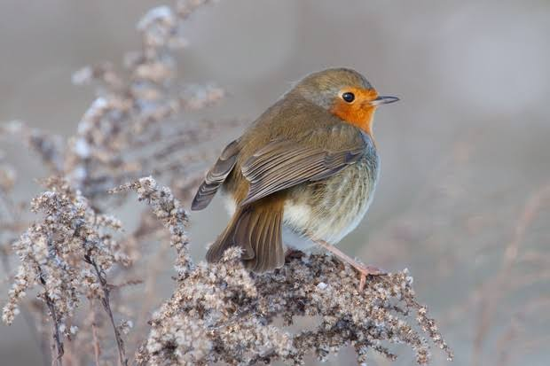

Europeans Robin
Birds
The European robin, known simply as the robin or robin redbreast in the British Isles, is a small insectivorous passerine bird, specifically a chat, that was formerly classified as a member of the thrush family but is now considered to be an Old World flycatcher.
Lifespan: 13 months (In captivity)
Family: Muscicapidae
Class: Aves
Clutch size: 5 – 6
Scientific name: Erithacus rubecula
Kingdom: Animalia
Robin, either of two species of thrushes (family Turdidae) distinguished by an orange or dull reddish breast. The American robin (Turdus migratorius), a large North American thrush, is one of the most familiar songbirds in the eastern United States.
Early colonial settlers named it robin because its breast colour resembled that of a smaller thrush, the European robin (Erithacus rubecula).
The American robin is about 25 cm (10 inches) long and has gray-brown upperparts, a rusty breast, and white-tipped outer tail feathers.
The birds inhabit deciduous forests but are also a familiar sight in American towns and cities. Most are highly migratory, spending the winter in flocks in the southern United States, though a few winter as far north as southern Canada.
The American robin feeds on earthworms, insects, and berries. The nest, built of twigs, roots, grass, and paper with a firmly molded inner layer of mud, is placed in trees or on building ledges.
Four to six bluish green eggs are incubated by the female for 12–14 days. The female incubates the eggs and the male obtains food for the young, who fly in 14–16 days. There may be two or three broods per season. The name robin is also applied to other New World thrushes of the genus Turdus.
Biology of Europeans Robin
Subspecies
In its large continental Eurasian range, robins vary somewhat, but do not form discrete populations that might be considered subspecies.
Robin subspecies are mainly distinguished by forming resident populations on islands and in mountainous areas. The robin found in the British Isles and much of western Europe, Erithacus rubecula melophilus, occurs as a vagrant in adjacent regions.
E. r. witherbyi from Northwestern Africa, Corsica, and Sardinia closely resembles melophilus but for a shorter wing length.
The northeasternmost birds, large and fairly washed-out in colour are E. r. tataricus. In the southeast of its range, E. r. valens of the Crimean Peninsula, E. r. caucasicus of the Caucasus and N Transcaucasia, and E. r. hyrcanus southeastwards into Iran are generally accepted as significantly distinct.
On Madeira and the Azores, the local population has been described as E. r. microrhynchos, and although not distinct in morphology, its isolation seems to suggest the subspecies is valid (but see below).
Distribution and habitat
The robin occurs in Eurasia east to Western Siberia, south to Algeria and on the Atlantic islands as far west as the Azores and Madeira. It is a vagrant in Iceland. In the south-east, it reaches the Caucasus range.
Irish and British robins are largely resident but a small minority, usually female, migrate to southern Europe during winter, a few as far as Spain. Scandinavian and Russian robins migrate to Britain and western Europe to escape the harsher winters.
These migrants can be recognised by the greyer tone of the upper parts of their bodies and duller orange breast. The European robin prefers spruce woods in northern Europe, contrasting with its preference for parks and gardens in Ireland and Britain.
In southern Iberia, habitat segregation of resident and migrant robins occurs, with resident robins remaining in the same woodlands where they bred.
Attempts to introduce the European robin into Australia and New Zealand in the latter part of the 19th century were unsuccessful. Birds were released around Melbourne, Auckland, Christchurch, Wellington and Dunedin by various local acclimatisation societies, with none becoming established.
There was a similar outcome in North America as birds failed to establish after being released in Long Island, New York in 1852, Oregon in 1889–1892, and the Saanich Peninsula in British Columbia in 1908–1910.
Breeding
Robins may choose a wide variety of sites for building a nest. In fact, anything which can offer some shelter, like a depression or hole may be considered. As well as the usual crevices, or sheltered banks, other objects include pieces of machinery,
barbecues, bicycle handlebars, bristles on upturned brooms, discarded kettles, watering cans, flower pots and even hats. The nest is composed of moss, leaves and grass, with fine grass, hair and feathers for lining.
Two or three clutches of five or six eggs are laid throughout the breeding season, which commences in March in Britain and Ireland. The eggs are a cream, buff or white speckled or blotched with reddish-brown colour, often more heavily so at the larger end.
When juvenile birds fly from the nests they are mottled brown in colour all over. After two to three months out of the nest, the juvenile bird grows some orange feathers under its chin and over a similar period this patch gradually extends to complete the adult appearance.
Magnetoreception
The avian magnetic compass of the robin has been extensively researched and uses vision-based magnetoreception, in which the robin's ability to sense the magnetic field of the earth for navigation is affected by the light entering the bird's eye. The physical mechanism of the robin's magnetic sense is not fully understood, but may involve quantum entanglement of electron spins.